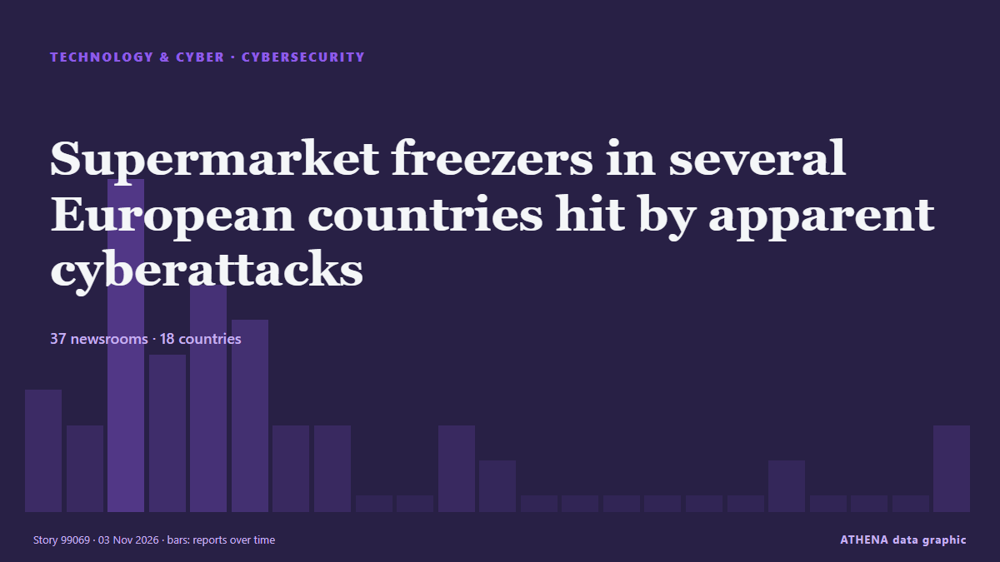

Supermarket freezers in several European countries hit by apparent cyberattacks

Supermarkets in Sweden, Belgium, Luxembourg, Ireland and Estonia were hit Monday by problems with freezers and fridges that apparently were caused by cyberattacks, forcing some to dispose of ruined… von The Canadian Press (via CityNews)
Unabhängig gemeldet von 40 Medien in 21 Ländern seit dem 2. Nov., zuerst von Türkiye Today; die Berichterstattung breitet sich weiter aus. ATHENA stuft das Risiko als hoch ein (6.3/10), vor allem wegen der Schwere des beschriebenen Schadens und seiner geografischen und sektoralen Reichweite. Die Konfidenz liegt bei 87 % (hoch): 40 Medien bestätigen es unabhängig, bei einer mittleren Verlässlichkeit der Quellen von 74 %. Medien nach Land: Vereinigte Staaten (8), Vereinigtes Königreich (8), Niederlande (3). Berichterstattung: 2. Nov. bis 3. Nov., 26 Stunden.
Warum es wichtig ist: Entwicklungen in Technologie und Cybersicherheit prägen Sicherheit, Wettbewerb und die Regeln des digitalen Lebens.
Was sich geändert hat: 28 neue Berichte von 27 Redaktionen in den 24 Stunden bis 3. Nov..
Erste Schlagzeile: Belgian supermarket chain probes cyberattack after cooling systems fail
Schlagzeilen werden auf Englisch angezeigt, wie veröffentlicht.
Auf einen Blick
Ausgewählt, bewertet und geschrieben nach der veröffentlichten Methodik von ATHENA. Kein Redakteur greift in einzelne Ereignisse ein. So entsteht ATHENA ›
| 02 Nov 09:10 UTC | 3 |
|---|---|
| 02 Nov 10:10 UTC | 2 |
| 02 Nov 11:10 UTC | 9 |
| 02 Nov 12:10 UTC | 4 |
| 02 Nov 13:10 UTC | 6 |
| 02 Nov 14:10 UTC | 5 |
| 02 Nov 15:10 UTC | 2 |
| 02 Nov 16:10 UTC | 2 |
| 02 Nov 17:10 UTC | 0 |
| 02 Nov 18:10 UTC | 0 |
| 02 Nov 19:10 UTC | 2 |
| 02 Nov 20:10 UTC | 1 |
| 02 Nov 21:10 UTC | 0 |
| 02 Nov 22:10 UTC | 0 |
| 02 Nov 23:10 UTC | 0 |
| 03 Nov 00:10 UTC | 0 |
| 03 Nov 01:10 UTC | 0 |
| 03 Nov 02:10 UTC | 0 |
| 03 Nov 03:10 UTC | 1 |
| 03 Nov 04:10 UTC | 0 |
| 03 Nov 05:10 UTC | 0 |
| 03 Nov 06:10 UTC | 0 |
| 03 Nov 07:10 UTC | 2 |
| 03 Nov 08:10 UTC | 0 |
| 03 Nov 09:10 UTC | 0 |
| 03 Nov 10:10 UTC | 2 |
| 03 Nov 11:10 UTC | 0 |
| 03 Nov 12:10 UTC | 1 |
| 02 Nov 09:20 UTC | 4.3 |
|---|---|
| 02 Nov 10:00 UTC | 4.9 |
| 02 Nov 11:06 UTC | 5.5 |
| 02 Nov 16:42 UTC | 5.8 |
| 03 Nov 12:20 UTC | 6.3 |
Warum diese Zahlen
Bedeutung
Risiko
Konfidenz
Die Berichterstattung – wer berichtete, und wann
Schlagzeile wie veröffentlicht · öffnet das Original- Türkiye Today · TürkeiBelgian supermarket chain probes cyberattack after cooling systems fail
- NL Times · NiederlandeCyberattack hits Delhaize supermarket fridges, freezers at dozens of Belgium locations
- DutchNews.nl · NiederlandeHackers tamper with fridges at 17 Dutch firms as attacks spread
- Tom's Hardware · Vereinigte StaatenSupermarket freezers across Europe struck in second crippling cyberattack
- ProtoThema English ·‘Cyberattack’ targets supermarket refrigerators in Sweden, Belgium, Luxembourg and Ireland – temperatures raised to 50°C
- The Guardian · Vereinigtes KönigreichShop fridges and freezers across Europe hit by fresh suspected cyber-attack
- Politico Europe · BelgienEurope’s supermarkets hit by new wave of cyberattacks targeting fridges
- BBC News · Vereinigtes KönigreichShop freezers in seven European countries hit by cyber-attack
- MyJoyOnline · GhanaSupermarket freezers in Belgium, Sweden and Luxembourg hit by suspected cyber-attack
- Insurance Journal · Vereinigte StaatenUpdate: Supermarkets Across Europe Report New Suspected Freezer Hack
- Euractiv · BelgienSuspected cyberattacks disrupt supermarkets in Belgium, Sweden, Estonia
- NBC News (World) · Vereinigte StaatenSupermarkets across Europe hit by new fridge cyberattacks
- The Next Web · NiederlandeSuspected supermarket freezer hack spreads across six European countries
- Al Jazeera English · KatarSuspected cyberattacks trigger supermarket fridge failures across Europe
- The Canadian Press (via CityNews) · KanadaSupermarket freezers in several European countries hit by apparent cyberattacks
- The Independent · Vereinigtes Königreich‘It’s very scary’: Fridge temperatures soar in European supermarkets after suspected hack
- The Verge · Vereinigte StaatenMore European supermarkets are getting their freezers hacked
- Times of India · IndienFridges hacked, food spoiled: Cyberattack disrupts supermarkets across Europe
- Belfast Telegraph · Vereinigtes KönigreichSupermarket freezers across Europe hit by apparent cyberattacks
- The Irish News (Belfast) · Vereinigtes KönigreichSupermarket freezers across Europe hit by apparent cyberattacks
- The Business Times · SingapurHot and cold: Europe’s supermarkets hit by another fridge hack
- France 24 English · FrankreichFresh wave of fridge cyberattacks hits European supermarkets
- ABC News (International) · Vereinigte StaatenFreezers at supermarkets in several European countries hit by apparent cyberattacks
- The National Herald · Vereinigte StaatenFreezers at Supermarkets in Several European Countries Hit by Apparent Cyberattacks
- Global News (World) · KanadaSupermarket freezers in 4 European countries hit by apparent cyberattack
- ABC News Australia · AustralienCyberattack on fridges hits supermarkets across Europe
- The National · Vereinigte Arabische EmirateEuropean supermarkets hit by freezer hacks
- DW English · DeutschlandEuropean supermarkets targeted in second reported cyberattack
- Supply Chain Brain · Vereinigte StaatenHackers Launch New Wave of Cyber-Attacks Against European Supermarket Freezers
- PBS NewsHour World · Vereinigte StaatenFreezers at supermarkets in several European countries hit by apparent cyberattacks, ruining food
- The Herald (Scotland) · Vereinigtes KönigreichFresh supermarket cyberattacks spoil food across four European countries
- GBC Ghana Online · GhanaEuropean supermarket freezers hit by suspected cyber-attack
- Daily Mirror · Sri LankaNew cyberattack on supermarket fridges sweeps across Europe
- News of Bahrain · BahrainCyberattacks disrupt supermarket fridges
- Kyiv Post · UkraineEurope Experiences Second Wave of Cyberattacks, Supermarket Fridges Targeted
- NDTV · IndienCyberattack Disrupts Supermarket Fridges Across 9 European Countries
- The Independent · Vereinigtes KönigreichFridge temperatures soar in European supermarkets after suspected hack: ‘It’s very scary’
- Mainichi (English) · JapanSupermarket freezers in several European countries hit by apparent cyberattacks
- Guardian Business · Vereinigtes Königreich'It's a form of terrorism': fridges across Europe hit by suspected cyber-attacks – video
- Arab Times · KuwaitSupermarket freezers in several European countries hit by apparent cyberattacks